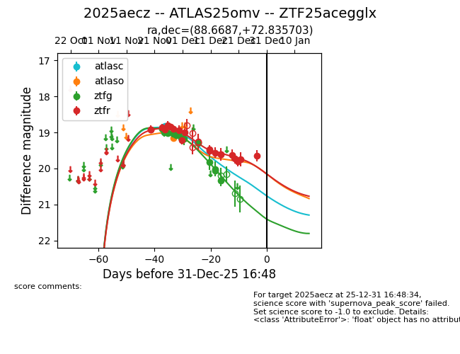
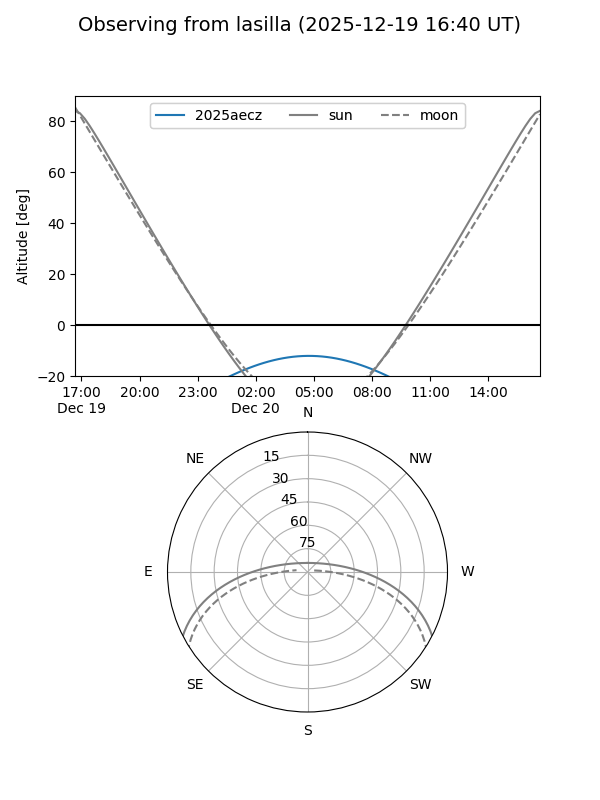
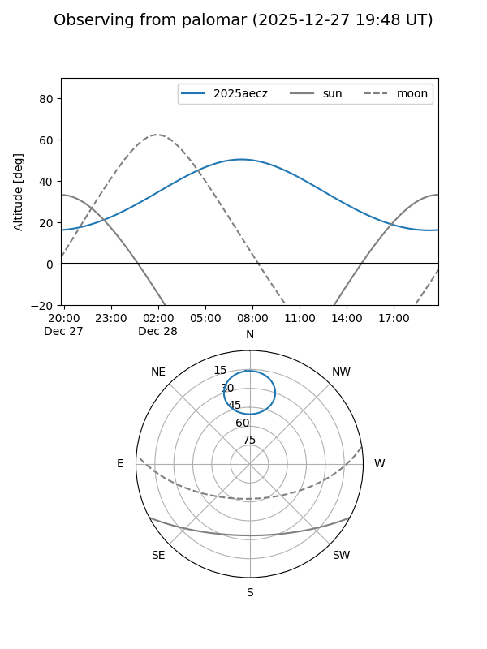
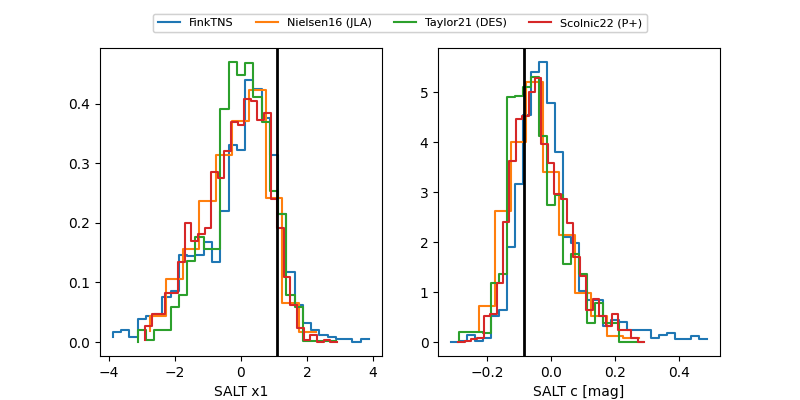

2025aecz
Target 2025aecz at 2025-12-19 08:04
Aliases and brokers:
FINK: fink-portal.org/ZTF25acegglx
Lasair: lasair-ztf.lsst.ac.uk/objects/ZTF25acegglx
ALeRCE: alerce.online/object/ZTF25acegglx
TNS: wis-tns.org/object/2025aecz
YSE: ziggy.ucolick.org/yse/transient_detail/2025aecz
alt names
ZTF25acegglx (ztf,fink_ztf)
2025aecz (tns,yse)
ATLAS25omv (atlas)
Coordinates:
equatorial (ra, dec) = 88.6687,+72.83570
equatorial (HMS+DMS) = 05:54:40.48,+72:50:08.53
galactic (l, b) = (140.8787,+21.79502)
Flags:
Photometry:
last atlasc=18.83, atlaso=19.06, ztfg=20.33, ztfr=19.63
1 atlasc, 2 atlaso, 13 ztfg, 16 ztfr detections
Lightcurve

Visibility


Additional plots
